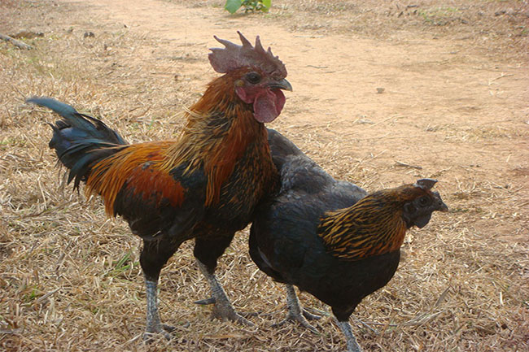

ไก่บ้าน หมายถึง
จจุบันประชาชนนิยมรับประทานไก่พื้นเมืองกันมาก แม้ว่าประชาชนจะนิยมเลี้ยงกันอยู่ทั่วไปก็ตาม แต่ไก่พื้นเมือง ก็ยัง ไม่เพียงพอต่อความต้องการของตลาด หรือประชาชนผู้รับประมาณเนื้อไก่พื้นเมือง ทั้งนี้เพราะผู้ที่เลี้ยงไกพื้นเมืองในชนบทโดยทั่วไป ใช้วิธีการเลี้ยงแบบปล่อยให้ไก่พื้นเมืองหากินเองตามธรรมชาติ และเลี้ยงเป็นจำนวนน้อย จะให้อาหารบ้างเป็นบางครั้งคราว จึงทำให้ไก่พื้นเมืองเจริญเติบโตช้าและเป็นโรคตายจำนวนมาก ทั้งๆ ที่ไก่พื้นเมืองมีลักษณะเด่น คือ เลี้ยงง่าย มีความต้านทานโรคสูง เนื้อเป็นที่นิยมรับประทาน เพราะมีรสชาติดีดังนั้น หากผู้ที่เลี้ยงไกพื้นเมืองมีการศึกษาวิธีการเลี้ยงไก่พื้นเมือง ให้เข้าใจ พร้อมทั้งมีการดูแลป้องกันรักษาการเกิดโรคต่างๆ ก็จะทำให้ผลผลิตไก่พื้นเมืองดีขึ้น สามารถจำหน่ายได้ราคาดี เป็นการเพิ่มพูนรายได้ให้กับผู้ที่เลี้ยงไก่พื้นเมืองอีกทางหนึ่งด้วย หากมองให้กว้างๆออกไปอีกไก่พื้นเมืองจะช่วยให้ธรรมชาติมีความสมดุลในระบบไร่นา คือ จะช่วยจิกกินแมลงที่ทำลายต้นพืชบางอย่างการ
รูปภาพ